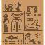

A Origem
A Caixa da Avó
Desde pequeno, Ivo esconde o próprio rosto[cite: 1]. Sua Avó foi a única pessoa que nunca o reprimiu, apoiando-o incondicionalmente[cite: 1].
Anos depois, Ivo construiu para ela uma caixa com rosto de falcão, no mesmo estilo da sua[cite: 1]. O objeto tornou-se o símbolo do amor inquebrável entre os dois[cite: 1].